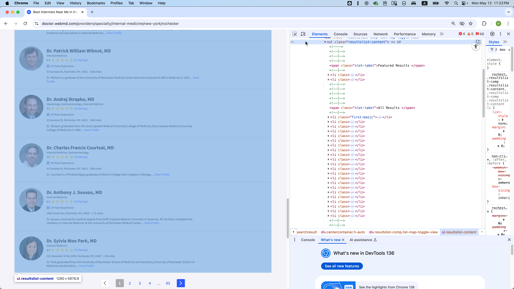
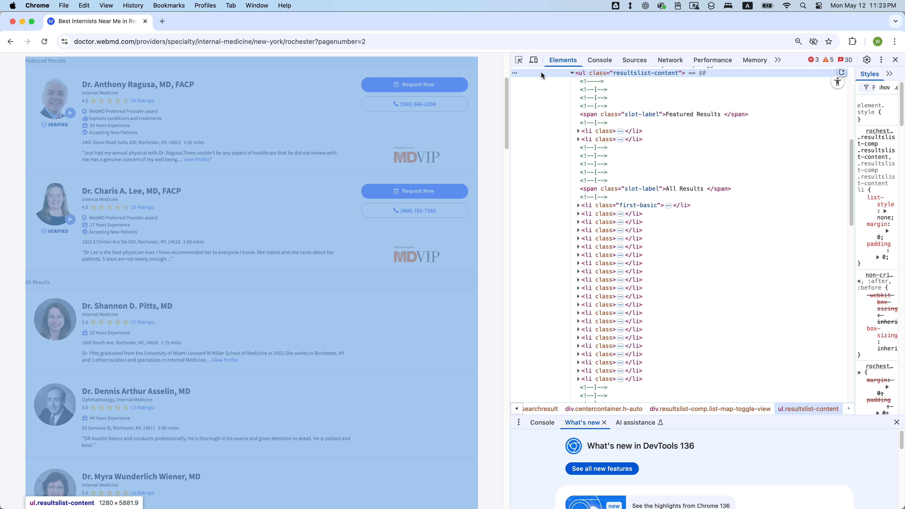
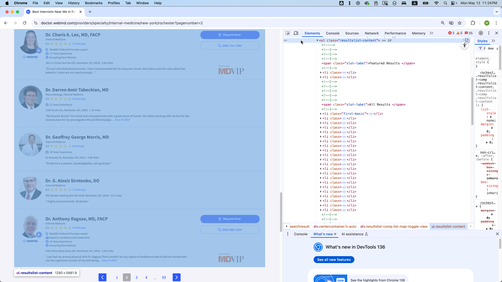
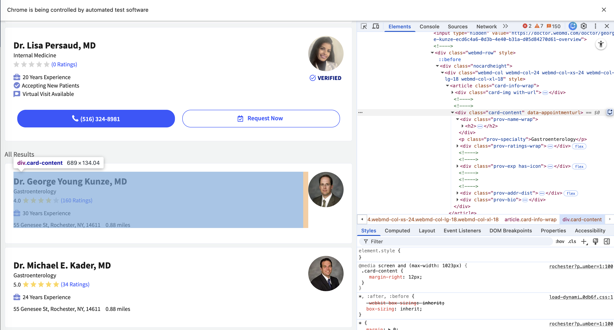
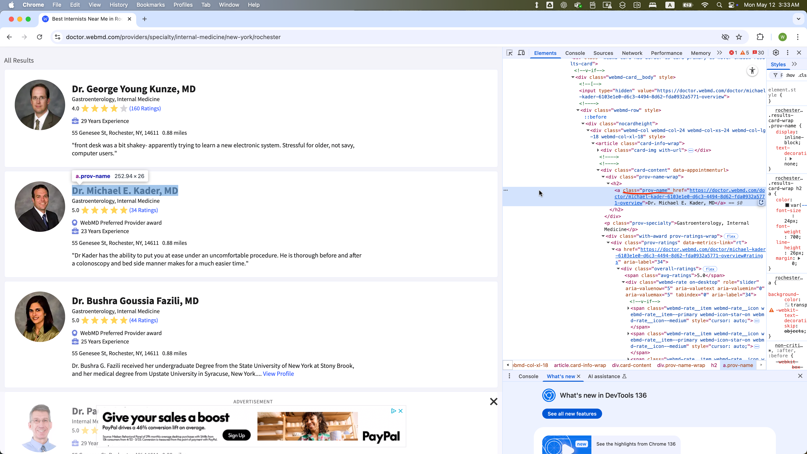
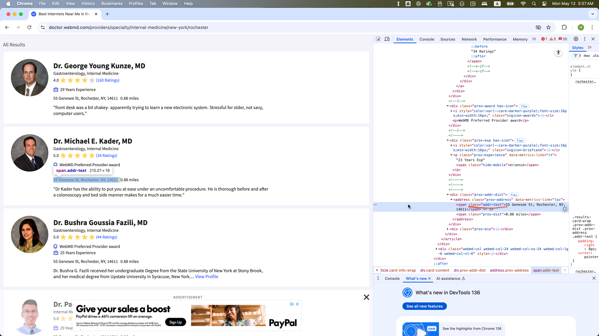
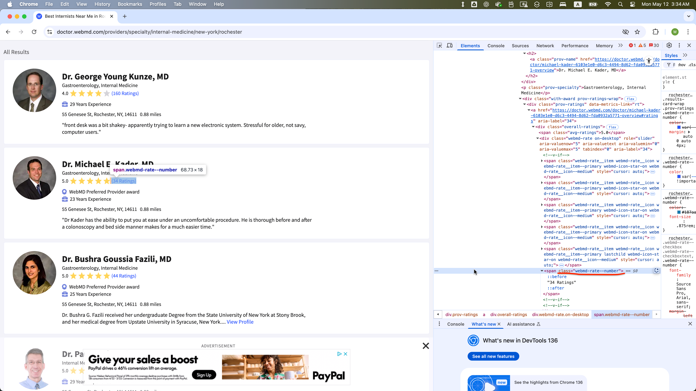
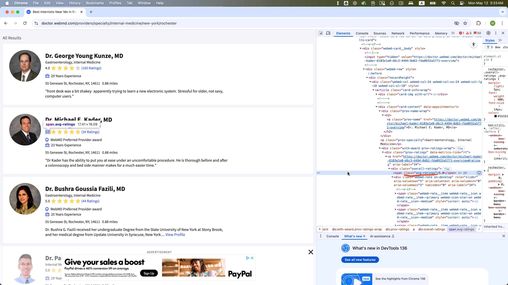
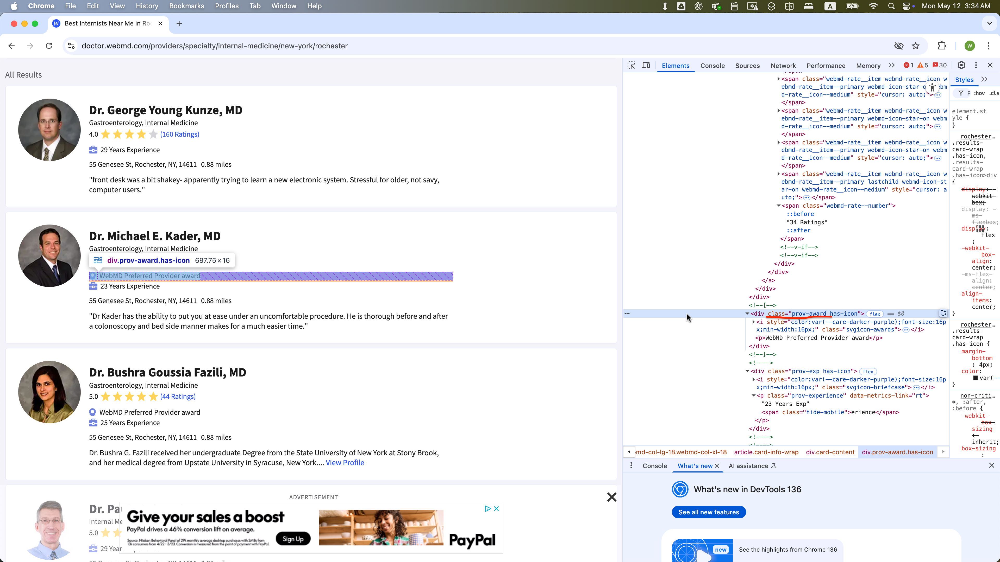
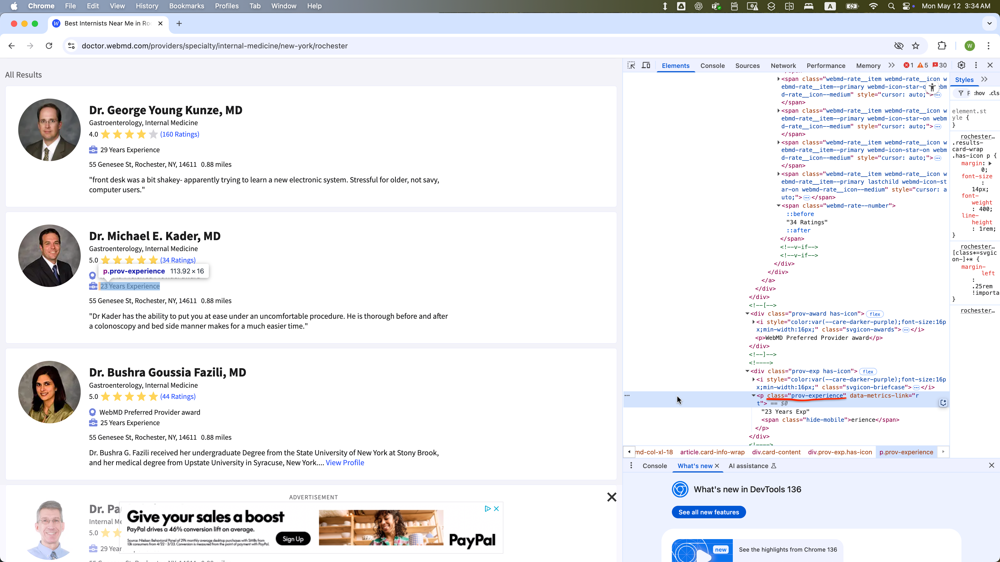

Scrapping WebMD Data with Python selenium
Final Exam, DANL 210-01, Spring 2025
📌 Directions
This is an exam on a paper, so minor coding errors are expected. My main focus is on your approach to each question — the logic, algorithms, and syntax you use. Nearly perfect code will be rewarded with bonus credit.
Data Collection with Selenium (Points: 24)
You will be collecting data from WebMD.com on internal medicine doctors located in Rochester, NY:
Screenshots
Start of the first page
End of the first page

Start of the second page

End of the second page

DOM Structure
Each doctor’s information is contained within a WebElement with class = “card-content”:

- The site contains 35 pages, with each page accessible via a URL of the form:
- https://doctor.webmd.com/providers/specialty/internal-medicine/new-york/rochester?pagenumber=1
- https://doctor.webmd.com/providers/specialty/internal-medicine/new-york/rochester?pagenumber=2
- …
- https://doctor.webmd.com/providers/specialty/internal-medicine/new-york/rochester?pagenumber=35
- Each page has 68
WebElements with class = “card-content”, except page 35, which may have fewer.- Across all pages (1-35), the first eight of those 68
WebElements on each page are featured results and should be excluded from scraping. - The remaining
WebElements represent a standard listing and should be included in your data collection.
- Across all pages (1-35), the first eight of those 68
- For each
WebElementwith class = “card-content” in the standard listing, these child elements are present:- class = “prov-name” (Doctor’s name)
- class = “prov-specialty” (Specialty)
- class = “webmd-rate.on-desktop” (Number of ratings)
- Some
WebElementswith class = “card-content” in the standard listing might also include:- class = “addr-text-dist”: Parent
WebElementswith class = “addr-text-dist” include:- class = “addr-text” (Address)
- class = “avg-ratings” (Average rating)
- class = “prov-award” (Awards)
- class = “prov-experience” (Years of experience)
- class = “addr-text-dist”: Parent
- However, these optional child
WebElements (class values with addr-text, avg-ratings, prov-experience, prov-award) are not present in someWebElements with class = “card-content”
WebElement Examples
The WebElement of class = “prov-name” is selected within one WebElement with class = “card-content”:

The WebElement of class = “addr-text” is selected within one WebElement with class = “card-content”:

The WebElement of class = “webmd-rate” is selected within one WebElement with class = “card-content”:

The WebElement of class = “avg-ratings” is selected within one WebElement with class = “card-content”:

The WebElement of class = “prov-award” is selected within one WebElement with class = “card-content”:

The WebElement of class = “prov-experience” is selected within one WebElement with class = “card-content”:

Task:
- Loop through pages 1 to 35 by constructing the URL with an f-string using the format:
f"{base_url}?pagenumber={page}"
base_url = 'https://doctor.webmd.com/providers/specialty/internal-medicine/new-york/rochester'
# Example URLs
url_1 = f"{base_url}?pagenumber=1"
url_2 = f"{base_url}?pagenumber=2"
...
url_35 = f"{base_url}?pagenumber=35"On each page:
- Locate all elements with class=“card-content”.
- Skip the first 16 elements (0-15).
- Collect information about the providers who are not featured.
- For each remaining element, extract:
- name (class=“prov-name”)
- specialty (class=“prov-specialty”)
- address (class=“addr-text”)
- rated_number (class=“webmd-rate–number”)
- avg_rating (class=“avg-ratings”, if present)
- award (class=“prov-award”, if present)
- experience (class=“prov-experience”, if present)
Concatenate each doctor’s data as a row in a pandas DataFrame
After loading each page, pause execution for a random 5–8 second interval.
Your Task: Complete the Script Below
Answer:
import pandas as pd
import os, time, random
from io import StringIO
# Import the necessary modules from the Selenium library
from selenium import webdriver # Main module to control the browser
from selenium.webdriver.common.by import By # Helps locate elements on the webpage
from selenium.webdriver.chrome.options import Options # Allows setting browser options
from selenium.webdriver.support.ui import WebDriverWait
from selenium.webdriver.support import expected_conditions as EC
from selenium.common.exceptions import NoSuchElementException
from selenium.common.exceptions import TimeoutException
from selenium.common.exceptions import StaleElementReferenceException
# Set the working directory path
wd_path = 'ABSOLUTE_PATHNAME_OF_YOUR_WORKING_DIRECTORY' # e.g., '/Users/bchoe/Documents/DANL-210'
os.chdir(wd_path) # Change the current working directory to wd_path
os.getcwd() # Retrieve and return the current working directory
# Create an instance of Chrome options
options = Options()
options.add_argument('--disable-blink-features=AutomationControlled') # Prevent detection of automation by disabling blink features
options.page_load_strategy = 'eager' # Load only essential content first, skipping non-critical resources
# Initialize the Chrome WebDriver with the specified options
driver = webdriver.Chrome(options=options)
_______________PROVIDE_YOUR_CODE_FROM_HERE_______________Answer: